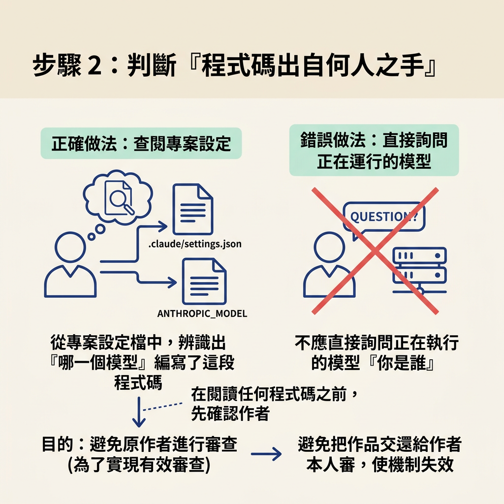
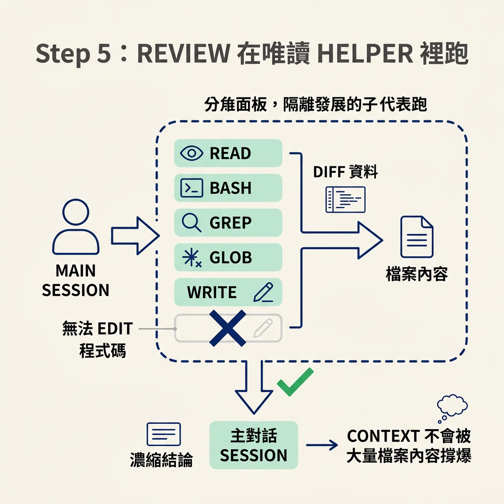
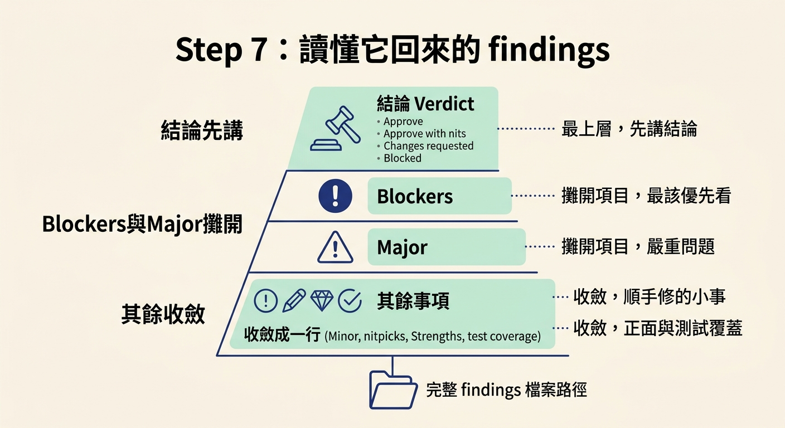

這一節要帶你完整跑一次 check review。做完之後，你會拿到一份依嚴重度排序的 findings 檔；而你的主對話只會收到一份精簡摘要，因為讀 diff 與讀檔的過程都發生在一個獨立的唯讀 helper 裡。你會逐步看懂：它怎麼判斷作者模型、為什麼只問一句確認、換成哪一個模型、為什麼要讀完整份檔案，以及一份 findings 該怎麼讀。
前置條件是：這個功能已經建置、驗證、通過測試，而且處在一條相對 base 有差異的分支上（或是你在 base 分支上直接有尚未提交的變更）。如果你還沒走到這一步，先回去把 check verify 與 test 跑完，因為 check review 不重跑 app、也不補測試，它假設這些都已經做過了。
你要準備的只有一件事：想清楚這次要請它看哪個範圍。課程示範選的是資料模型（data model），也就是整個資料庫設定，因為整個應用程式都依賴它。範圍講得越具體，findings 越聚焦。
打開 Claude Code，或任何你慣用的 agent，然後跑 check。它不會直接動手，而是先問你要跑哪一種檢查，以及針對哪個部分。課程示範輸入的是 check review data model。
Which check do you want to run? Type one: • verify run the real app and prove the change works against its spec (usually right after /develop) • review a fresh model senior read of the diff, ranked findings (usually right before a PR) • both verify first, then review
兩個模式的時機不同：verify 通常接在 /develop 之後，用真實的 app 證明行為；review 通常發生在開 PR 之前。除此之外，它還支援幾種 steering：check review with opus 可以指定 reviewer，check review uncommitted 則把範圍縮到工作區尚未提交的變更。
在它讀第一行程式碼之前，它得先弄清楚一件事：這段碼是哪個模型寫的。原因是，如果把作品交還給作者本人審，就等於整個機制白做了。所以它必須先確定作者是誰，再換一個不同的模型。

判斷的方式特別值得注意。它不會問目前正在跑的模型「你是誰」，因為那個答案本身可能就錯，而且一段對話裡寫死的模型名稱，在你一換模型之後就立刻過時。它改為去讀專案設定檔。
**1a: Detect the author model (best effort).** The author model is whatever is generating code in this session. Using your file tools, read `ANTHROPIC_MODEL` from the env if set, and check `.claude/settings.local.json`, `.claude/settings.json`, and the user-level `.claude/settings.json` in the home directory for a `"model"` value. Map ids to families: `claude-opus-*` → `opus`, `claude-sonnet-*` → `sonnet`, `claude-haiku-*` → `haiku`, `claude-fable-*` → `fable`. Use the system-prompt value only as a last-resort weak hint, possibly stale.
換句話說，它把「我是誰」換成「這個專案設定成用誰」。設定檔是持久的，不會因為你在對話中途切換模型而說謊。
偵測完之後，它只給你一個問題：「這是寫這段碼的模型嗎？」
這一句確認看起來很小，卻是整個機制的保證。因為偵測只是盡力而為（best effort），一旦猜錯，就會默默用同一個模型審同一份程式碼，整個跨模型的好處當場消失。所以它把這一步交給你看一眼確認；如果偵測到的家族是對的，直接選推薦項就好。課程示範裡，作者是 Sonnet，所以確認 sonnet 是正確答案；換成你，可能是 Opus 或其他。
你確認作者後，它會挑一個對照的模型當 reviewer。對照關係是固定的：
| Author model | Reviewer model to spawn | |---|---| | `opus` | `sonnet` | | `sonnet` | `opus` | | `fable` | `opus` | | `haiku` | `sonnet` |
規則的核心是：reviewer 永遠不能和作者同一個家族。另外，review 是高度需要推理的工作，所以不會用 haiku 來審。課程示範這一輪的結果是「作者 Sonnet、review 用 Opus」。
接著它把 review 放進一個獨立的子代理去跑。這個子代理拿到的工具裡沒有 Edit，也就是說，它結構上根本無法修改程式碼。它只能讀、只能判斷、只能把發現寫進 findings 檔。
- `model`: the reviewer model chosen in Step 1 (different family from the author) - `description`: `"Review: <N> changed files on <reviewer-model>"` - Tools: `Read`, `Bash`, `Grep`, `Glob`, `Write`, no `Edit` (the reviewer reports, it does not change code)
這樣安排還有第二個好處：diff 與檔案的讀取都留在那個子代理裡，不會擠進你的主對話。你的 session 只收到最後的濃縮結論，context 不會被大量檔案內容撐爆。

很多 review 工具只看 diff，它偏不。它會先看 diff，然後做一件大多數工具沒做的事：把涉及的每一個檔案從頭到尾讀一遍。
原因不難懂。diff 只顯示「你改了哪幾行」，但真正決定這個改動安不安全的，往往是那幾行周圍的程式碼。只盯著改動的行，你會看不清它在整體裡造成的影響。
課程示範裡，因為範圍是資料模型，它檢查了 source 下的 database 資料夾、server、drizzle，以及 spec。整個 run 總共涉及 23 個檔案。
跑完之後，findings 會寫成一份檔案，主模型只轉述重點。你讀的時候可以先抓這幾層：
課程把轉述的原則說得很清楚：先把結論講出來，把每一個 blocker 和 major 都攤開，因為那些才是行動項目；minor、nitpicks、strengths 以及 reviewer 與範圍，收斂成最後一行，再附上完整 findings 的檔案路徑。

示範這一輪的結果是：五個 major 修正，另外還有十個 minor、八個 nitpicks，以及一句 strengths「schema faithfully implements the spec」。其中幾個 major 很值得看，因為它們正好是「作者自己不容易抓到」的那種問題：
package.json 把某個套件放在 devDependencies，但它其實是執行期的 peer dependency，所以正式環境做精簡安裝時整個 owner auth 會壞掉。{ ok: false }。describe.skip 關掉了，從來沒有真的跑過。示範者也點出，第一點他自己大概不會發現。這正是獨立視角的價值。
你可以直接叫 agent 依照這份文件逐項修掉所有問題。如果 review 裡夾帶的是 bug，就交給 debug 處理；如果是測試相關的問題，就交給 test 去補。到這裡你會開始看見，這些 skill 是彼此接得起來的。
也要記得 skill 本身的邊界：check review 在轉述完之後就結束了。它不修 findings（那是實作端的事），也不會去呼叫其他 skill。它的工作只是評估。
check review從專案設定檔判斷作者模型，而不是問目前模型自己是誰；只問一句「這是寫這段碼的模型嗎」來確認，因為猜錯就會讓跨模型的好處消失。接著它換成一個不同家族的模型，在一個沒有Edit權限的唯讀子代理裡跑 review。它先看 diff，再把涉及的每個檔案整份讀完，因為決定改動安不安全的是周圍的程式碼。回來的 findings 會依嚴重度排序，並附上一句 strengths 與測試覆蓋的判讀。你可以拿它去修問題，bug 交給
debug、測試交給test；而check review自己只負責判斷，不負責修改。
程式碼有了第二個視角，接下來要處理的是「人」。下一節要看 /document 為什麼要讀四份材料，以及它如何把理由與風險直接從磁碟上拿出來，而不是靠你一週後回想。